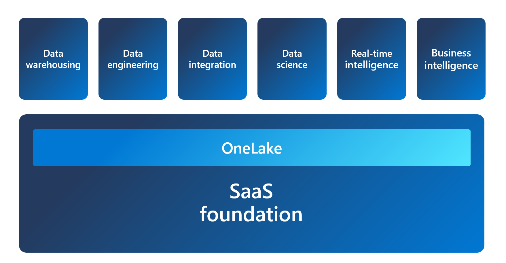
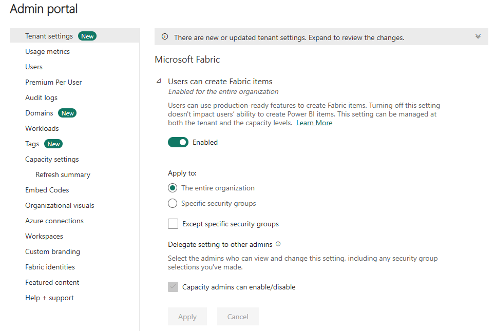
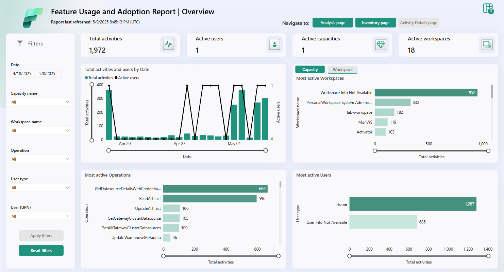

| Concept | Description |
|---|---|
| Tenant | Dedicated space for organizations to create, store, and manage Fabric items. Aligned with Microsoft Entra ID. Maps to the root of OneLake — top level of the hierarchy. |
| Capacity | Dedicated set of resources available at a given time. Defines the ability of a resource to perform an activity or produce output. A tenant can have one or more capacities. Offered through the Fabric SKU and Trials. |
| Domain | Logical grouping of workspaces. Used to organize items in a way that makes sense for the organization (e.g., sales, marketing, finance). |
| Workspace | Collection of items that brings together different functionality in a single tenant. Acts as a container that uses capacity and provides access controls. |
| Items | Building blocks of the Fabric platform — data warehouses, data pipelines, datasets, reports, dashboards, and more. |
Several roles work together to administer Microsoft Fabric: Microsoft 365 admin, Power Platform admin, Fabric capacity admin. The Fabric admin role was formerly known as Power BI admin.
| Task Area | Description |
|---|---|
| Security & Access Control | Manage RBAC to define who can view/edit content. Set up data gateways for on-premises data sources. Manage user access with Microsoft Entra ID. |
| Data Governance | Secure inbound/outbound connectivity. Monitor usage and performance metrics. Apply data governance policies to restrict unauthorized access. |
| Customization & Configuration | Configure private links, define data classification policies, adjust report and dashboard appearance. |
| Monitoring & Optimization | Configure monitoring and alerting. Optimize query performance. Manage capacity and scaling. Troubleshoot data refresh and connectivity issues. |
Fabric admins can perform most admin tasks using one or more of the following tools:


As a Fabric admin, part of your role is to manage security for the Fabric environment, including managing users and groups, and how users share and distribute content.
Fabric includes built-in governance features to help you manage and control your data: